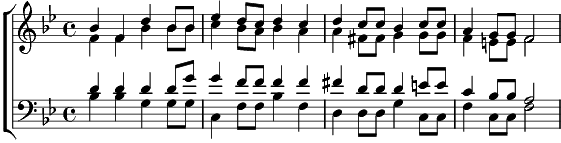

1. Ehre, Ehre sei Gott in der Höhe!, singet der Himmlischen selige Schar.
Ehre, Ehre sei Gott in der Höhe!, stammeln auch wir, die die Erde gebar.
Staunen nur kann ich, und staunend mich freu'n,
Vater der Welten! Doch stimm ich mit ein: Ehre sei Gott in der Höhe!
Staunen nur kann ich und staunend mich freu'n:
Vater der Welten! Doch stimm ich mit ein: Ehre sei Gott in der Höhe!
2. Ehre, Ehre sei Gott in der Höhe! Kündet der Sterne strahlendes Heer.
Ehre, Ehre sei Gott in der Höhe! Säuseln die Lüfte, brauset das Meer.
Feiernder Wesen unendlicher Chor jubelt im ewigen Danklied empor:
Ehre sei Gott in der Höhe!
Feiernder Wesen unendlicher Chor jubelt im ewigen Danklied empor:
Ehre sei Gott in der Höhe!